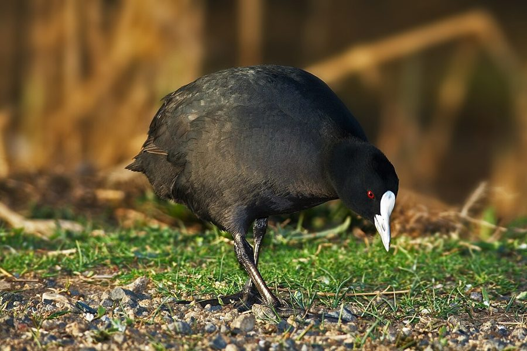

लालखरCommon Coot
Fulica atra · Rallidae · BRD-0058

- Scientific name
- Fulica atra Linnaeus, 1758
- Family
- Rallidae
- Hindi
- लालखर
- Status here
- native
- IUCN
- LC
When to look कब देखें
Expected mainly in October, November, December, January, February, March, April.
लालखर / Common Coot
Fulica atra Linnaeus, 1758 — Rallidae
लालखर (कॉमन कूट) — पूर्वी उत्तर प्रदेश के बड़े तालाबों, जलाशयों और घाघरा नदी की झीलों में सर्दियों के दौरान पाया जाने वाला एक मध्यम आकार का, गहरे काले रंग का जलीय पक्षी है। यह एक शीतकालीन प्रवासी (winter visitor) है जो अक्टूबर-नवंबर में उत्तर भारत के मैदानों में पहुंचता है। इसकी सबसे बड़ी पहचान इसकी सफ़ेद रंग की चोंच और चोंच के ऊपर माथे पर बना सफ़ेद ढाल (striking white bill and frontal shield) है, जिसे देखकर इसे "गंजा" (bald forehead) भी कहा जाता है। जलमुर्गी (Common Moorhen) के विपरीत, जो पानी की सतह पर तैरती है, लालखर गहरे पानी में भोजन की तलाश के लिए अक्सर गोता लगाता (dives frequently) है। यह बहुत सामाजिक पक्षी है और सर्दियों में सैकड़ों की संख्या में झुंड (gregarious flocks) बनाकर रहता है। जब इसे पानी से उड़ना होता है, तो यह सतह पर दौड़ते हुए बहुत सारे पानी के छींटे उड़ाता है (runs across water to take off)।
Quick Identification त्वरित पहचान
| Feature | Description |
|---|---|
| Size | Medium-sized, rounded waterbird (36–42 cm total length); duck-like profile |
| Colouration | Entirely soot-black body; lacks the white flank stripe of the Moorhen |
| Frontal Shield | Conspicuous, pure white fleshy shield on the forehead; bill is completely white |
| Bare Parts | Eyes are bright red; legs are greenish-grey; toes have large, scallop-shaped swimming lobes |
| Take-off | Skitters across the water surface with rapid wingbeats before taking flight |
| Swimming | Swims in open water, often bobbing its head; dives completely under water for weeds |
Field tip: Look for large flocks on open water bodies during winter. Watch for rounded, black birds with white foreheads. If they dive or patter across the water surface to escape, they are Common Coots. The female resembles the male and is shown in the field tip.
Morphology आकारिकी
Biometrics (typical measurements in the northern Indian plains):
| Measurement | Range |
|---|---|
| Total length | 360–420 mm |
| Wing (flattened chord) | 195–225 mm |
| Tail | 50–65 mm |
| Tarsus | 52–60 mm |
| Bill (culmen from base) | 30–38 mm |
| Weight | 600–900 g |
Plumage: The body plumage is uniform slate-black, turning velvety-black on the head and neck. Underparts are slightly paler grey. There is a tiny white patch under the eye. The wings are dark brown-black, with a narrow white border on the secondaries which is visible in flight. Unlike the Moorhen, it lacks any white lines on the flanks or white patches on the tail coverts.
Bare parts: The bill and broad frontal shield are pure white. The irises are bright red. The legs and long, slender tarsi are greenish-grey. The toes are not webbed like a duck's but are bordered by large, leaf-like swimming lobes (lobate feet) that fold when the foot is pulled forward and expand to push water when kicked back.
Vocalisations
Common Coots are very noisy, especially when in large winter flocks.
- Flock call: A short, sharp, metallic sounding kowk or kek, repeated constantly.
- Alarm call: A loud, explosive squeal or grunt, pssipp or pitt, produced during territorial fights or when birds are startled.
Behaviour & Ecology व्यवहार और पारिस्थितिकी
- Diving behaviour: Unlike surface-feeding rails, the Coot is an expert diver. It leaps slightly out of the water to gain downward momentum, then dives up to 2–5 metres deep to tear up submerged weeds from the bottom.
- Lobate feet: The scallop-shaped lobes on its toes are highly efficient for swimming and diving, but also allow it to walk on soft mud banks without sinking.
- Flight take-off: Heavy in flight. To take off, it must run (skitter) across the water surface for several metres, flapping its wings rapidly to gain speed.
Life Cycle / Phenology जीवन框
- Breeding: Mostly breeds in Kashmir, Ladakh, and temperate Eurasia. Sighting records suggest occasional breeding of resident pairs in large reservoirs of southern UP, but the wintering population in Basti is entirely migratory.
- UP migration calendar: Arrives in large numbers in late October or early November. They occupy large lakes and reservoirs, forming massive rafts (groups), and depart by late March or early April.
- Nesting in breeding range: Builds a large nest of reeds and twigs in shallow water, anchored to vegetation.
Host Plants or Prey आहार
Primary food items:
- Submerged plants: Feeds mainly on submerged aquatic weeds, including Hydrilla (Hydrilla verticillata), pondweed, and algae.
- Insects & Invertebrates: Water beetles, snails, insect larvae, and small worms gathered from the pond bed.
- Vertebrates: Occasional small fish and tadpoles.
Predators / Natural Enemies शत्रु
- Raptors: Large wintering eagles (like the Greater Spotted Eagle) and Marsh Harriers (Circus aeruginosus) prey on coots, often targeting isolated individuals.
- Mammals: Jackals and feral dogs hunt them when they come onto land to graze.
- Human impact: Poaching for meat in major wetlands is a significant threat during winter.
Agricultural / Human Relevance कृषि प्रासंगिकता
Aquatic weed control. By feeding heavily on submerged weeds like Hydrilla, Common Coots help prevent the overgrowth of vegetation in reservoirs and agricultural irrigation channels.
Conservation and legal status: Protected under Schedule IV of the Wildlife Protection Act, 1972. Major threats in UP include poaching, water pollution from pesticide run-off, and the conversion of large wetlands into dry agricultural fields.
Expected Locally स्थानीय रूप से अपेक्षित
Not a field record. Written from published accounts for eastern Uttar Pradesh. No confirmed local sighting yet — if you have seen it, that is what the atlas needs.
अभी तक स्थानीय पुष्टि नहीं। यह विवरण प्रकाशित स्रोतों से है, किसी अवलोकन से नहीं।
A common winter visitor to the large open lakes (taal) and oxbow lakes of Basti district, such as those in the southern floodplains of the Ghaghra river. They are often observed in large, dense groups of hundreds of birds in the middle of open water, far from the shore.
Distribution वितरण
Global range: Widespread across Europe, Africa, Asia, and Australia. Northern populations migrate south to tropical regions.
In India: A widespread and abundant winter visitor to all plains, reservoirs, and lakes.
In Uttar Pradesh: A regular winter visitor state-wide, especially in larger wetland sanctuaries.
In Basti district / eastern UP: Regularly recorded in winter months in all blocks with large water bodies.
Research Questions शोध प्रश्न
Anyone can investigate these | कोई भी इन प्रश्नों की जाँच कर सकता है
- How many seconds does a Common Coot remain submerged during a diving sequence? — Measure and record dive durations in deep ponds.
- What is the average group size (raft) of Common Coots observed on Ghaghra river oxbow lakes in January? — Count and estimate flock sizes.
- Do Coots spend more time feeding in the morning hours compared to late afternoon? / क्या लालखर दोपहर की तुलना में सुबह के समय भोजन करने में अधिक समय बिताता है? — Track foraging patterns.
- How do Common Coots defend their feeding zones from grazing ducks like Pintails? — Record interspecific competition.
- What date is the last Common Coot recorded in Basti each spring? / हर साल वसंत ऋतु में बस्ती में अंतिम लालखर किस तारीख को देखा जाता है? — Track spring departure dates through community surveys.
Similar Species मिलती-जुलती प्रजातियाँ
| Species | Key Difference | हिंदी |
|---|---|---|
| Common Moorhen (Gallinula chloropus) | Slightly smaller; red bill and frontal shield with yellow tip; white stripe on the flank; does not dive frequently | जलमुर्गी — लाल चोंच, सफ़ेद धारी, उथले पानी में रहना |
| Grey-headed Swamphen (Porphyrio poliocephalus) | Much larger; bright purple-blue body; massive red bill and legs; lives in reeds | कैम — बहुत बड़ा आकार, चमकीला नीला रंग, बड़ी लाल चोंच |
| Lesser Whistling Duck (Dendrocygna javanica) | Rufous-brown duck; long neck; lacks white frontal shield; produces whistling calls | सीटी बत्तख — भूरा रंग, लंबी गर्दन, सीटी जैसी आवाज |
Field rule: Entirely soot-black waterbird with a distinctive white bill and white frontal shield, swimming in open water and diving frequently, is a Common Coot.
Taxonomy & Classification वर्गीकरण
Original description. Carl Linnaeus described the Common Coot as Fulica atra in 1758 in his Systema Naturae (ed. 10, vol. 1, p. 152). The type locality was Sweden. The genus name Fulica is Latin for a coot. The specific name atra is Latin for dull black, referencing the bird's plumage.
Subspecies. Four subspecies are recognized globally. The nominate subspecies visiting UP is:
| Subspecies | Authority | Range | Notes |
|---|---|---|---|
| F. a. atra | Linnaeus, 1758 | Europe, North Africa, and Asia to Japan; winters in India | UP subspecies; nominate form; widely distributed across Eurasia |
Family and order placement. Placed in the order Gruiformes, family Rallidae (rails, crakes, and coots).
Phylogenetic notes. The genus Fulica represents a monophyletic group within Rallidae, characterized by lobate feet and diving adaptations.
IUCN status rationale. Listed as Least Concern (LC) due to its extremely large range and stable global population, despite local pressures from wetland destruction and hunting.
Photo Gallery फोटो गैलरी
References संदर्भ
- Linnaeus, C. (1758). Systema Naturae. Tenth Edition. Holmiae, p. 152. [original description]
- Ali, S. & Ripley, S. D. (1999). Handbook of the Birds of India and Pakistan. Vol. 3. Oxford University Press, New Delhi.
- Grimmett, R., Inskipp, C. & Inskipp, T. (2011). Birds of the Indian Subcontinent. 2nd ed. Christopher Helm, London.
- Taylor, B. & van Perlo, B. (1998). Rails: A Guide to the Rails, Crakes, Gallinules and Coots of the World. Pica Press, Sussex.
- BirdLife International (2024). Fulica atra. IUCN Red List of Threatened Species. Ver. 2024.
- GBIF Occurrence Data — Fulica atra, Uttar Pradesh (2010–2025).
Source file: species/fauna/birds/common_coot.md